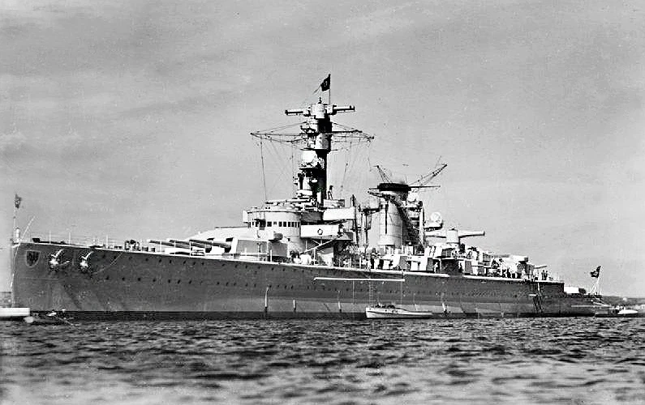

| Spesifikasi | Detail | |
|---|---|---|
| Jenis | Penjelajah Berat (sering disebut "Kapal Tempur Saku" oleh Inggris) | |
| Tonase Standar | 11.700 - 12.100 ton | |
| Tonase Penuh | 14.900 - 16.200 ton | |
| Panjang | 186 m | |
| Lebar | 20,7 - 21,7 m | |
| Draf | 7,25 - 7,34 m | |
| Propulsi | 8 x mesin diesel MAN, 2 x poros baling-baling | |
| Tenaga | 54.000 PS (39.720 kW) | |
| Kecepatan Maksimum | 28 knot (52 km/jam) | |
| Jarak Jelajah | 10.000 mil laut (19.000 km) pada 20 knot | |
| Awak | ~600 (masa damai) hingga ~1.100 (masa perang) | |
| Persenjataan Utama | 6 x meriam 28 cm (11 inci) SK C/28 dalam dua turet tripel | |
| Persenjataan Sekunder | 8 x meriam 15 cm (5,9 inci) SK C/28 dalam turet tunggal | |
| Persenjataan Anti-Pesawat | Bervariasi signifikan seiring waktu dan antar kapal, umumnya meliputi:
|
|
| Tabung Torpedo | 8 x tabung torpedo 53,3 cm (21 inci) dalam dua dudukan quadruple | |
| Pesawat | 1 atau 2 x pesawat amfibi Heinkel He 60 atau Arado Ar 196 | |
| Fasilitas Penerbangan | 1 x ketapel peluncur pesawat | |
| Lapisan Baja Sabuk | 60 - 100 mm | |
| Lapisan Baja Dek | 40 - 70 mm | |
| Lapisan Baja Kubah Meriam Utama | 50 - 140 mm |